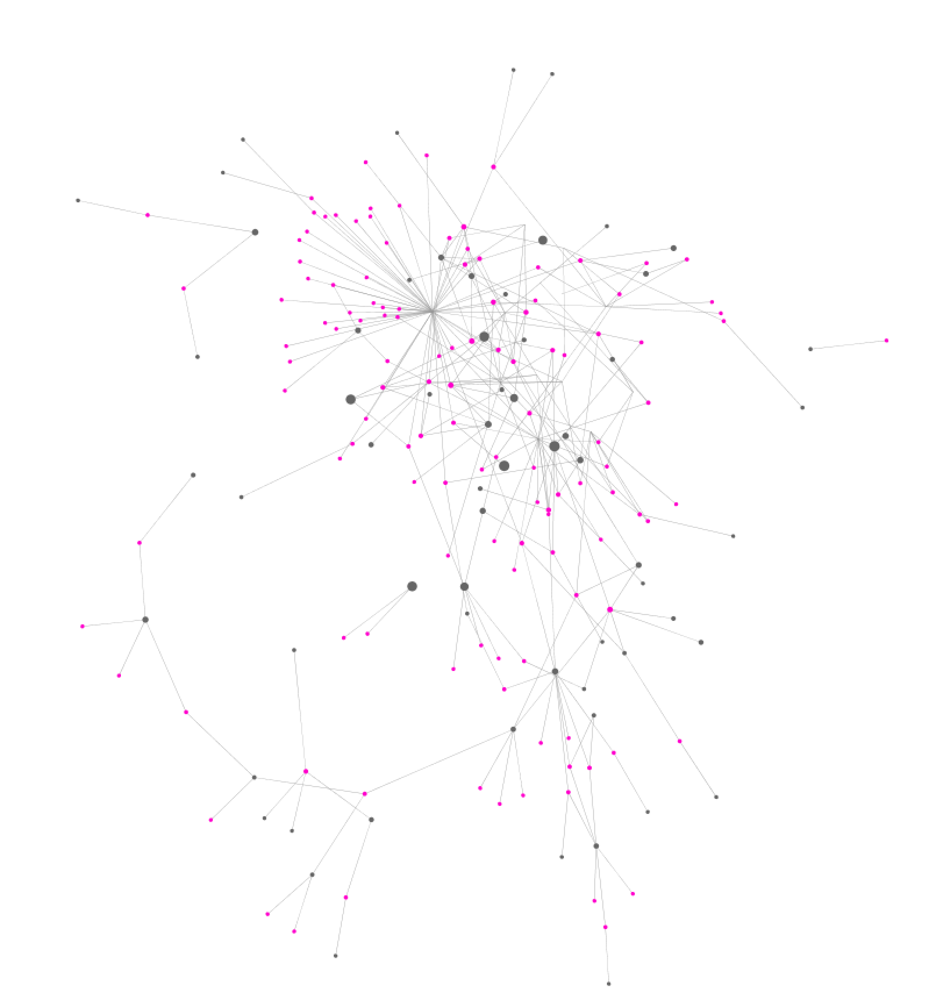

The above network graph shows the interpersonal dimensions of Ocampo's networks. In other words, this visualization draws on personal information from the individuals in Ocampo’s network – both biological data (sex) and biographical data (occupation) – in an effort to showcase the relationships among these people on a larger scale. The vibrantly colored nodes here pertain to an individual’s sex – male (blue) or female (pink) –, while the grey nodes show their shared occupations. My data structures occupation around the following five general categories: artist, activist, (literary) producer, writer, and academic. Within each of these five categories, there are more specific occupation type descriptions including poet, dramatist, film director, screenwriter, professor, and archivist, among (many) others.
At first glance we immediately identify a larger concentration of male individuals in Ocampo’s networks, and also a fair number of shared occupations between the different sexes, including writer and artist. Here is an interactive version of this network.
I have broken the larger network graph apart into two smaller ones (below) in order to more clearly showcase the presence of males and females in Ocampo's networks.

Although her literary journal Sur is traditionally associated with the successes and fame of its many male collaborators and contributors – most notably that of Jorge Luis Borges – these network graphs reveal a strong female presence in her publishing enterprise that tends to be overlooked.

If we look closer at the nodes in this network we get a sense of the individual female players in Ocampo's networks, and some of their shared occupations.